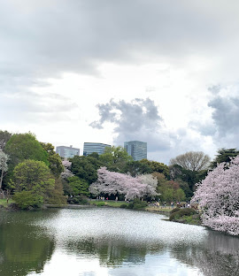

Shinjuku Gyoen National Garden is a large, peaceful park in central Tokyo that blends Japanese, English, and French garden styles. It’s especially popular for cherry blossoms in spring and colorful leaves in autumn.